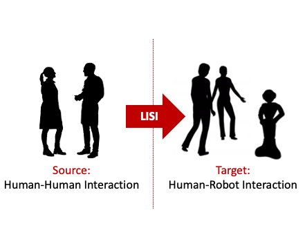

LISI - Learning to Imitate Social Interaction

EPSRC New Investigator Award
Oya Celiktutan, Principal Investigator
Centre for Robotics Research
Department of Engineering
King's College London
I am looking for a creative and motivated postdoctoral researcher to join us!
If interested, [email me] !
|
Information for Prospective Candidates
The official application link will be available in the beginning of November, however please do not hesitate to contact [Oya] if you have any query!
Start date: 1 March 2021, or soon after
Project duration: 2 years / 24 months
About the Role
A Postdoctoral Research Associate position is available in the Social AI and Robotics (SAIR) Lab, Centre for Robotics Research, Department of Engineering to work with Dr Oya Celiktutan and her collaborators on the project titled “LISI - Learning to Imitate Nonverbal Communication Dynamics for Human-Robot Social Interaction” awarded by EPSRC. The main objective of the LISI project is to set the basis for the next generation of robots that will be able to learn how to interact with humans purely from visual observations. The candidate will perform research in the areas of machine learning and human-robot interaction. For more information about the project, please refer to the project summary below.
About the Candidate
The candidate should be motivated, creative and ambitious. They should be enthusiastic about collaborating with partners from multiple disciplines/industry as well as PhD students in the SAIR Lab. Key requirements include:
- PhD degree (or shortly expect to receive) in Engineering, Computer Science, Robotics, or related field;
- Strong background in machine learning, with specialisation in one or more of the following areas: human-robot interaction, computer vision, human behaviour analysis, weakly supervised/unsupervised/self-supervised learning, spatio-temporal graphs, deep reinforcement learning;
- Excellent publication record in high-quality journals and/or conference proceedings;
- Excellent programming skills, particularly, Python and/or C/C++. Hands-on experience with deep learning libraries (e.g., TensorFlow, PyTorch) and/or physical robots will be a plus;
- Ability to organise and prioritise work to meet deadlines with minimal supervision;
- Excellent interpersonal / teamwork skills.
About the Research Centre
The Centre for Robotics Research (CORE) brings together expertise in sensing, high-precision manipulation, machine learning, intelligent control and human-robot interaction to develop creative robotics approaches to society’s most critical challenges. The candidate will be a member of the SAIR Lab (https://sairlab.github.io) and will contribute to ongoing research activities in the areas of computer vision, machine learning and human-robot interaction, while benefiting from a strong network of researchers working in allied areas at CORE. For information about the department, please see https://www.kcl.ac.uk/engineering.
In addition to completing the online application, candidates should attach:
- Curriculum vitae with a full list of publications;
- Contact details of two referees;
- Two-page summary of research background, interests, and how they aim to contribute to the LISI project;
- Two papers (either published, accepted for publication, or in-preparation) demonstrating expertise in one or more of the areas mentioned above;
- The expected date of graduation (if currently pursuing a Ph.D).
|
Summary
We are approaching a future where robots will progressively become widespread in many aspects of our daily lives, including education, healthcare, work and personal use. All of these practical applications require that humans and robots work together in human environments, where social interaction is unavoidable. Along with verbal communication, successful social interaction is closely coupled with the interplay between nonverbal perception and action mechanisms, such as observation of one’s gaze behaviour and following their attention, coordinating the form and function of hand-arm gestures. Humans perform social interaction in an instinctive and adaptive manner, with no effort. For robots to be successful in our social landscape, they should therefore engage in social interactions in a human-like manner, with increasing levels of autonomy.
Despite the exponential growth in the fields of human-robot interaction and social robotics, the capabilities of current social robots are still limited. First, most of the interaction contexts has been handled through tele-operation, whereby a human operator controls the robot remotely. However, this approach will be labour-intensive and impractical as the robots become more commonplace in our society. Second, designing interaction logic by manually programming each behaviour is exceptionally difficult, taking into account the complexity of the problem. Once fixed, it will be limited, not transferrable to unseen interaction contexts, and not robust to unpredicted inputs from the robot’s environment (e.g., sensor noise).
Data-driven approaches are a promising path for addressing these shortcomings as modelling human-human interaction is the most natural guide to designing human-robot interaction interfaces that can be usable and understandable by everyone. This project aims (1) to develop novel methods for learning the principles of human-human interaction autonomously from visual data and learning to imitate these principles via robots using the techniques of computer vision and machine learning, and (2) to synergistically integrate these methods into the perception and control of real humanoid robots. This project will set the basis for the next generation of robots that will be able to learn how to act in concert with humans by watching human-human interaction videos.
|